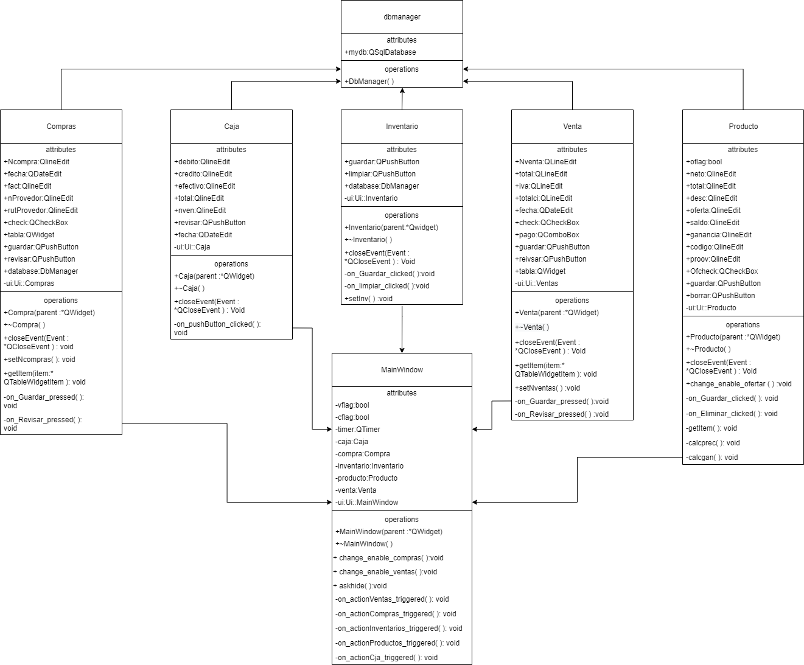

Dentro de un negocio pequeño o minimarket puede llegar a ser caótico, si es que no se lleva un registro confiable y ordenado de los productos en stock, los comprados y vendidos. Se puede intuir que existen múltiples alternativas para llevar el registro tanto de la compra-venta como del inventario mismo. Sin dudas, la más antigua y más usada de todas es llevar un registro en lapiz y papel, la cual trae consigo múltiples problemáticas, pero podría ser aún más catastrófico si no se hicieran dichos registros.
Debido a lo anterior podemos identificar varios problemas fundamentales, pero antes es necesario poder identificar claramente los agentes y sistemas. En primer lugar, se puede reconocer las siguientes operaciones principales para un local:
Por otro lado tenemos los agentes:
Finalmente se tiene el sistema, el cual comprende a todos los agentes "externos", que interactúan con los agentes principales. Es decir, se puede identificar:
Luego se puede entender y condensar de mejor forma las problemáticas asociadas a el contexto. De esta forma se puede reducir a que existe poca organización de los productos, en conjunto a falta de respaldo de información; ya que al no llevar un registro de los productos vendidos, comprados y en stock, es fácil que hayan pérdidas significativas sin siquiera percatarse o un mal seguimiento del crecimiento(o estancamiento) en el funcionamiento del local. Además, existe un exceso de trabajo no fundamental (pasos intermedios) que sin duda pueden ser quitados mediante el apoyo de sistemas informáticos, como lo es el caso para calcular el precio total de una venta revisando el precio de cada producto. Cerrando con las problemáticas, se tienen la dificultad de accesibilidad y dificultad de revisión, desde el punto de vista que la legibilidad de los registros en papel y lápiz puede ser un problema o que incluso que estos mismos registros se puedan dañar o extraviar con mayor facilidad.
Todas las problemáticas vistas, o al menos la mayoría, pueden ser abordadas mediante una interfaz gráfica de usuario (GUI). De esta forma se permite llevar mejores registros, un trabajo más eficiente y eficaz.
Dentro de las interacciones con el sistema que se ha definido, se pueden dar diversas situaciones donde un actor desea realizar una acción a través de un sistema. De esta forma podemos definir/revisar el flujo de algunas de estas situacíones, es decir, los casos de uso.
| Actor | Sistema |
|---|---|
| 1. El empleado del local realizó una compra a su proveedor favorito y desea llevar registro de ello. Abre el programa SiCoVen. | 2. El programa muestra una GUI con diferentes opciones disponibles, por ejemplo Compras, Ventas e Inventario. |
| 3. El usuario selecciona la operación Compras. | 4. El sistema, a través de la GUI, pide los datos de la compra realizada. |
| 5. El usuario ingresa los datos de los productos comprados, su código asociado y la cantidad comprada. | 6. La GUI guarda la compra realizada en el inventario y luego recarga para poder ingresar una nueva compra. |
| 7. El usuario da por terminada la operación y desea cerrar la sub-ventana de la operación Compras. | 8. El programa cierra la sub-ventana de compras dejando la opción de realizar otras operaciones durante el día. |
| Actor | Sistema |
|---|---|
| 1. El empleado del local quiere comprobar el total del día. Abre el programa SiCoVen. | 2. El programa muestra una GUI con diferentes opciones disponibles, por ejemplo Compras, Ventas e Inventario. |
| 3. El usuario selecciona la operación menú Ventas y la operación Caja. | 4. El sistema, a través de la GUI, muestra la fecha actual con la opción de cambiarla realizada. |
| 5. El usuario como no desea cambiar la fecha solo apreta el botón revisar. | 6. La GUI muestra el total en efectivo, total en tarjeta y total del día. |
| 7. El usuario da por terminada la operación y desea cerrar la sub-ventana de la operación Caja. | 8. El programa cierra la sub-ventana de compras dejando la opción de realizar otras operaciones durante el día. |
| Actor | Sistema |
|---|---|
| 1. El empleado del local ayuda a un cliente a realizar y desea llevar registro de una venta. Abre el programa SiCoVen. | 2. El programa muestra una GUI con diferentes opciones disponibles, por ejemplo Compras, Ventas e Inventario. |
| 3. El usuario selecciona la operación Ventas. | 4. El sistema, a través de la GUI, solicita los códigos y cantidad de los productos solicitados. |
| 5. El usuario ingresa los datos de los productos a vender, su código asociado y la cantidad. | 6. La GUI guarda la venta realizada en el inventario, calcula el total de la compra con iva y pide el método de pago. |
| 7. El usuario ingresa el método de pago | 8. El programa guarda la venta realizada y actualiza el inventario, luego recarga para poder ingresar una nueva venta. |
| 9. El usuario da por terminada la operación y desea cerrar la sub-ventana de la operación Ventas. | 6. La GUI cierra la sub-ventana de compras dejando la opción de realizar otras operaciones durante el día. |
Posteriormente, en la sección V. Pruebas del caso de uso, se mostrará más en detalle el resultado del Caso de uso 1: Compra al proveedor.
El equivalente de un plano en la arquitectura para nuestro proyecto es sin dudas el diagrama de Lenguaje Unificado de Modelado (UML por sus siglas en inglés). De esta forma se puede conocer a grandes rasgos la "arquitectura" de la solución, como objetos interactúan dentro de ella y a través de un análisis al diagrama se puede intuir si una solución puede funcionar o si está bien construida.
Por otro lado, para acercar al lenguaje de usuario puede ser más útil utilizar un diagrama de secuencia como el presentado en la imagen 2. Muestra el flujo, en nuestro caso en particular, del Caso N°1 (descrito en la sección III) de una manera más gráfica y sencilla.
Se realizan los casos de uso indicados en la sección III sin mayores complicaciones. A lo largo del proyecto se pudieron determinar múltiples dificultades, de entre las que destacan:
Para resolver el punto 1 y 3 se realizan pruebas unitarias y sencillas, leyendo y comprendiendo de fondo el manejo de las librerías asociadas a cada problema. Por ejemplo, para 1.1 (1.2 y 1.3 es válida también), se utiliza una base de datos de prueba y un proyecto aparte para realizar las pruebas e ir depurando sin preocuparse de lo demás, para luego ir escalando hasta llegar a la solución deseada. Finalmente para el layout se ajusta a mano, a través del código, los tamaños de las columnas de las tablas para que siga una distribución deseada y lógica.
A continuación se encuentra el proyecto, donde se puede realizar la prueba del caso de uso expuesto en la sección III y IV. Link al repositorio. y Link a comprimido.